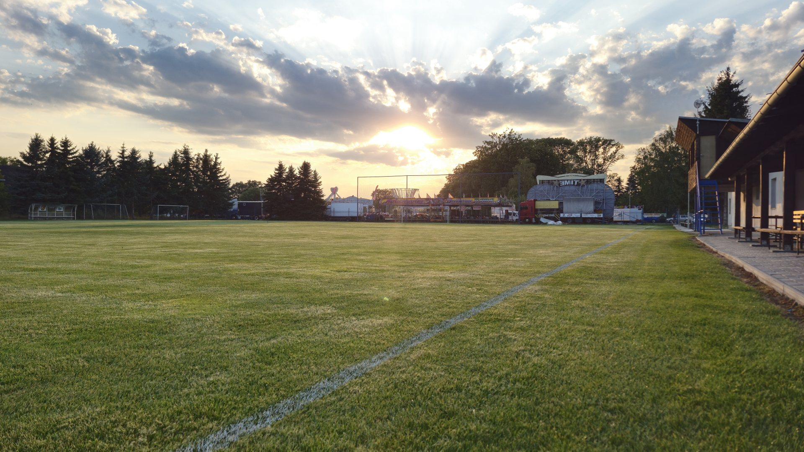

Sportovní klub · Červenka u Litovle
SK Červenka
Fotbal na Hané od roku 1945.
Hrajeme za Červenku.
Muži hrají okresní přebor Olomoucka. Přijďte fandit.

Sportovní klub · Červenka u Litovle
SK Červenka
Fotbal na Hané od roku 1945. Muži hrají okresní přebor Olomoucka, přijďte fandit.
Sezóna 2026/27 · Okresní přebor mužů
Zápasy a tabulka
Poslední výsledky
Celý rozpis sezóny
Oficiální výsledky na fotbal.cz
Žáci a benjamínci
Zápasy mládeže
Od roku 1945
Osmdesát let. Pořád hrajeme.
Červenka leží na Hané, dva kilometry od Litovle. Fotbal se tu hraje od roku 1945 a kolem hřiště se za tu dobu vystřídaly celé generace hráčů i fanoušků.
-
1945
Dne 28. listopadu se v hostinci sešel přípravný výbor a založil SK Červenka, prvním předsedou se stal Rudolf Tylšar.
-
1947
V červenci se otevřelo hřiště, které členové srovnali a vysypali škvárou z litovelské papírny, a mužstvo hned první sezónu vyhrálo II. třídu okresu Litovel.
-
1965
Na hody přijeli internacionálové Slavie Praha s legendárním brankářem Františkem Pláničkou, jediný gól Červenky mu dal Rudolf Kráčmar.
-
2004
Muži postoupili do krajské I. A třídy a hráli ji tři sezóny, dosud je to největší úspěch klubu.
-
2025
Osmdesát let fotbalu jsme 10. května oslavili zápasem bývalých hráčů proti Sigi teamu s Antonínem Panenkou.
-
Dnes
Muži hrají okresní přebor Olomoucka a mládež své soutěže, další kapitolu píšeme každý víkend.
Kdo za Červenku kope
Týmy
Fanoušci
Bez nich to nejde. Na derby přijde plno lidí a v okrese umíme i pořádné choreo.
Kdy hrajeme domaFotbal pro děti
Mládež
Děti z Červenky a okolí u nás hrají v kategoriích podle věku. Najděte tu svou, přihlaste dítě a domluvíme první trénink.
Fotky
Galerie
Zápasy, oslavy a všechno kolem nich.
Náš areál
Kus po kusu nový areál
Za posledních pár let se v areálu změnilo skoro všechno. Tady je, co se opravilo a postavilo.
Další opravy čekají. Pomozte nám s nimi.
Podpora klubu
Partneři klubu
Po povodni v září 2024 jsme šatny i hřiště dávali znovu dohromady. S podporou partnerů opravíme zbytek zázemí a dětem z mládeže dáme lepší podmínky k fotbalu.
Balíčky pro partnery
Další možnosti
Napište nám a domluvíme, co dává smysl vaší firmě.
Kontakt
Přidejte se k nám.
Hledáme hráče, děti do mládeže, lidi, kteří pomůžou u zápasů, i firmy, které chtějí podpořit fotbal ve vsi. Napište nám, co vás láká.
- Telefon
- +420 605 272 347